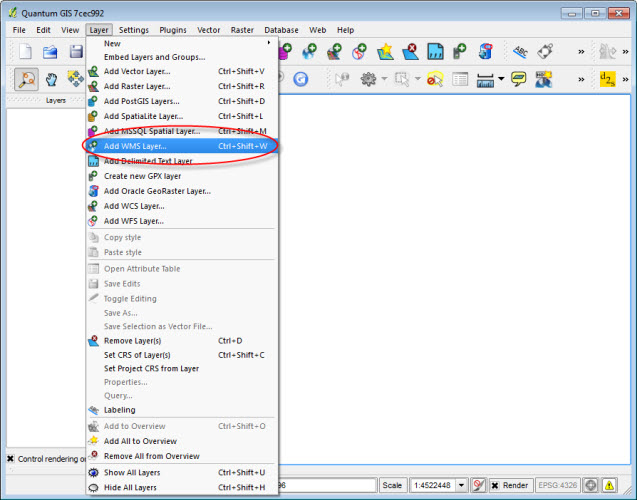
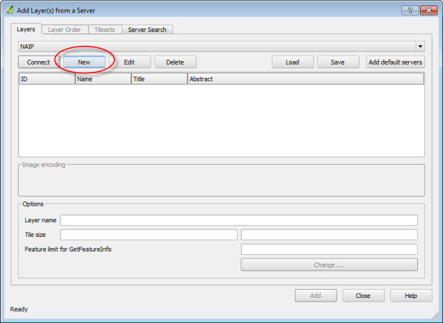
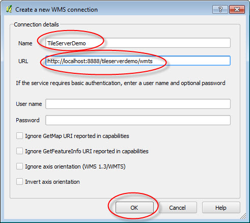
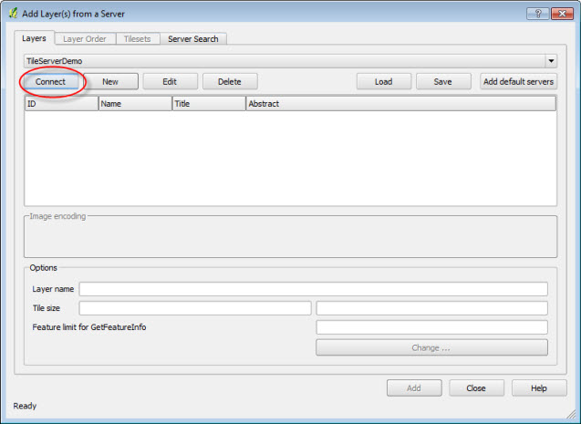
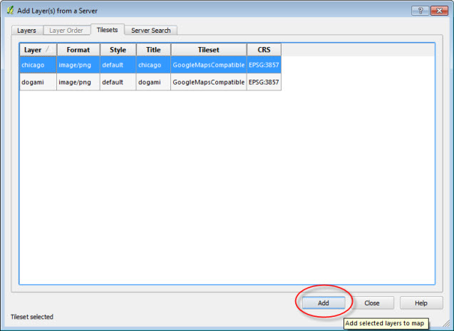
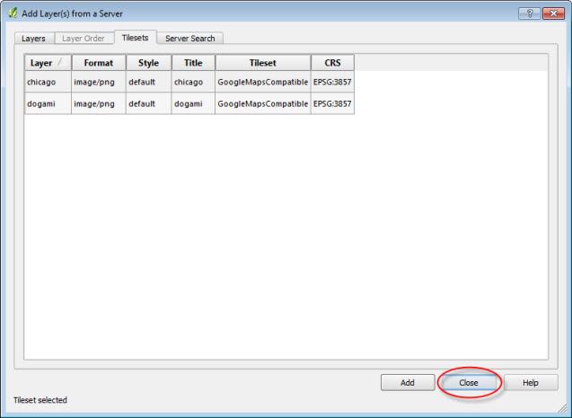
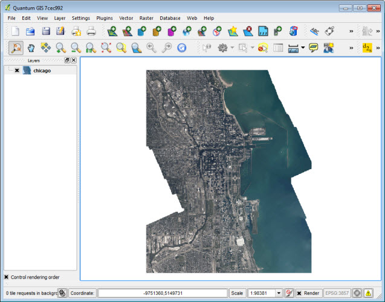

Loading tiles in Quantum GIS (qgis) 1.9+ as WMTS Service
1. Under the Layer menu select Add WMS Layer (or Ctrl+Shift+W)

3. Select New to add a service

4. Enter Name, Url path to WMTS and click OK

5. Select Connect

6. Choose a layer and select Add

7. Select Close to close the Add Layers Dialog Box

8. Map tiles are displayed in Quantum GIS Desktop as a WMTS service
